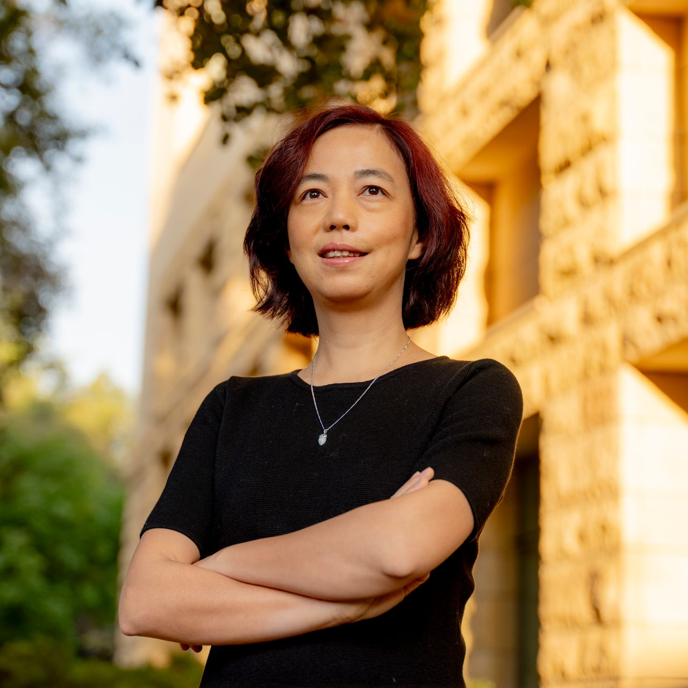

Below are listed some of the most influential academics in today's AI. For a list of impactful people from all kinds of domains of activity, from musicians and filmmakers to CEOs and entrepreneurs, one can consult the Time's Top 100 Most Influential People in AI.
Yann LeCun

VP and Chief AI Scientist, Facebook and Silver Professor of Computer Science, Data Science, Neural Science, and Electrical and Computer Engineering, New York University.
- Developed convolutional neural networks, which are pivotal in image recognition and processing, transforming fields like computer vision, medical image analysis and autonomous vehicles.
- Played a key role in popularizing backpropagation (an algorithm for training neural networks), laying the foundations for deep learning.
- Contributed to energy-based models, with applications in domains such as object recognition and natural language processing.
Yoshua Bengio

Professor at the University of Montreal, Scientific Director of Mila, the Quebec AI Institute.
- Explored various architectures and methods to improve the learning and generalization capabilities of deep networks, advancing deep learning and representation learning.
- Contributed to the development and refinement of Recurrent Neural Networks and Long Short-Term Memory, which are crucial for sequential data tasks like language modeling, speech recognition, and time-series prediction.
- Contributed to generative models, which are used for unsupervised learning and data generation.
Geoffrey Hinton
Professor emeritus at the University of Toronto and Researcher at Google.
- One of the pioneers of backpropagation, which revolutionized the training of neural networks and catalyzed deep learning.
- Developed the Boltzmann Machines, which are probabilistic models used for classification, regression, etc.
- Proposed capsule networks, which aim to address some of the limitations of convolutional neural networks.
Fei-Fei Li

Professor at Stanford University and Co-director of the Stanford Human-Centered AI Institute
- Initiated and led the ImageNet project, a large-scale dataset that has been crucial for the development of computer vision algorithms and significantly contributed to the widespread adoption of CNNs for image recognition tasks.
- Explored the intersection of AI and cognitive science, studying how AI can learn from and interact with the physical world.
- Worked on applying AI to healthcare, particularly in medical image analysis, aiming to improve diagnostic accuracy and efficiency.
Andrew Ng

Professor at Stanford University and Co-founder of Coursera
- Co-founded Coursera, offering widely accessible courses on AI and machine learning.
- Worked on machine learning, reinforcement learning, and robotics at Stanford University.
- Worked on initiatives to bring AI capabilities to various industries.